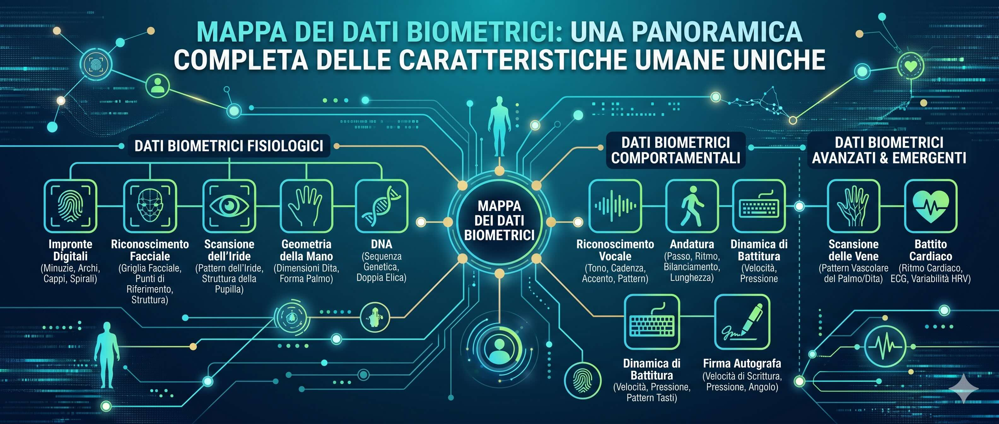
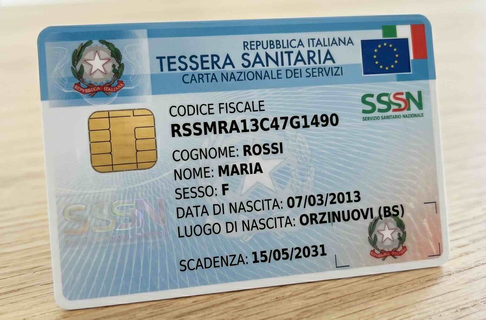
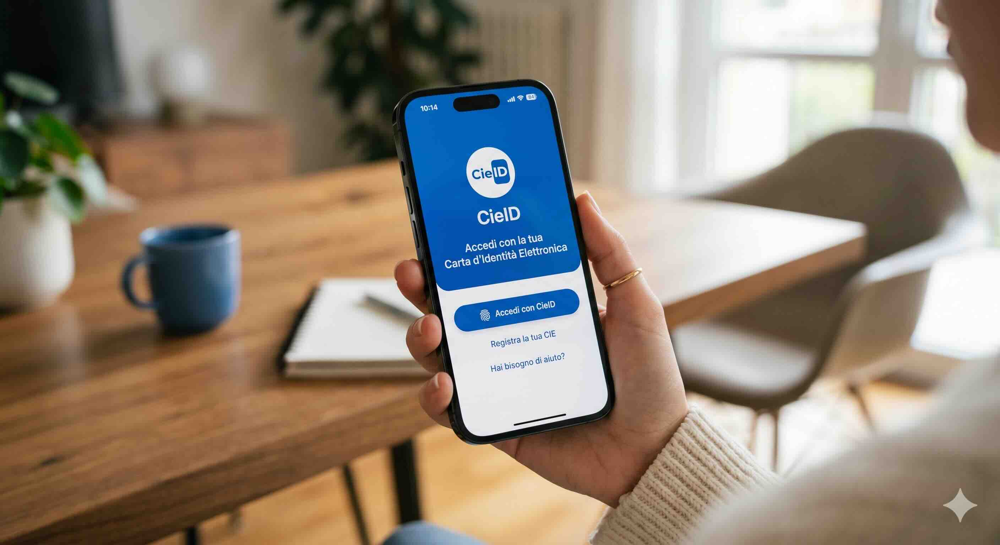
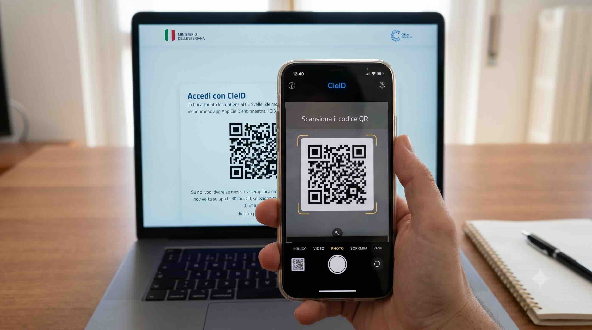

Cittadino del mondo… anche di quello digitale
Ogni giorno, anche senza accorgerti, usi servizi che hanno bisogno di sapere chi sei. In questo percorso scopriamo come dimostriamo la nostra identità nella vita reale e in quella online.
Che cos'è la cittadinanza digitale?
Essere cittadini significa avere diritti e doveri e poter usare i servizi pubblici: la scuola, la posta, il comune, la sanità. La cittadinanza digitale è la stessa cosa, ma quando questi servizi li usiamo attraverso un computer o uno smartphone: prenotare una visita, scaricare un certificato, iscriversi a scuola… tutto da casa.
Per farlo in sicurezza, però, il sistema deve essere certo che dall'altra parte dello schermo ci sia proprio tu e non qualcun altro. Ecco perché parliamo di identità digitale.
Cosa faremo in questo percorso
Quali dati dicono chi sei e perché a volte devi dimostrarlo.
Come una macchina riconosce una persona. Proverai uno scanner.
Quel codice strano che hai anche tu: lo costruiremo insieme.
Come funzionano e un generatore per crearne uno tuo.
Entrare nei siti dello Stato con la carta d'identità e un QR.
Password sicure, privacy e come evitare le trappole online.
Come il digitale aiuta… o lascia indietro chi non sa usarlo.
L'identità: chi sei e come lo dimostri
La tua identità è l'insieme delle cose che ti rendono unico e diverso da chiunque altro. Ma come fai a dimostrare agli altri di essere davvero tu?
Quali dati identificano una persona
Per riconoscerti, gli altri usano dei dati personali. Alcuni li hai dalla nascita, altri ti vengono dati dallo Stato. Eccone alcuni:
Perché bisogna poter dimostrare l'identità
Dimostrare chi sei serve a proteggere te e gli altri. Senza una prova, chiunque potrebbe fingersi te e prendere le tue cose o i tuoi diritti. Si chiama identificazione.
Per ritirare i soldi devi dimostrare che il conto è tuo, altrimenti chiunque potrebbe prenderli.
Per salire sull'aereo mostri il documento: serve a sapere chi viaggia, per la sicurezza di tutti.
La tua tessera sanitaria collega le cure proprio alla tua salute, non a quella di un altro.
Da grande, per votare mostrerai un documento: così ognuno vota una sola volta.
A chi devi esibire l'identità
Mostri un documento solo a chi ne ha davvero il diritto: le istituzioni pubbliche (polizia, comune, scuola), la banca, l'ospedale. Lo strumento normale per farlo è la carta d'identità.
🎮 Prova tu: quali dati ti identificano?
Clicca i dati che, da soli o insieme, servono per identificare con certezza una persona. Poi controlla.
I dati biometrici: il corpo come password
Alcuni dati non sono scritti su un foglio: sono parte del tuo corpo. Si chiamano dati biometrici e il digitale li usa per riconoscerti senza che tu debba ricordare nulla.

Quali dati biometrici usa il digitale
Il disegno di linee sui polpastrelli. È diverso per ogni dito e per ogni persona, persino tra gemelli.
La forma del viso: distanza tra gli occhi, naso, mento. È così che si sblocca molti smartphone.
I disegni colorati intorno alla pupilla. Sono unici e quasi impossibili da copiare.
Il tono e il modo di parlare. Alcune banche ti riconoscono al telefono dalla voce.
Come muovi la mano, la velocità, la pressione: anche questo ti distingue.
Tecnologie avanzate leggono il ritmo del cuore o il disegno delle vene della mano.
🎮 Simulatore: lo scanner biometrico
Immagina un scanner all'ingresso di un ufficio importante. Scegli quale dato far leggere, poi avvia la scansione. Lo scanner confronta il dato con quelli registrati e decide se aprire la porta.
L'identità digitale e la Pubblica Amministrazione
La identità digitale è la tua carta d'identità… ma per Internet. Ti permette di entrare nei siti dello Stato ed essere riconosciuto con certezza, senza andare di persona a uno sportello.
Che cos'è la Pubblica Amministrazione
La Pubblica Amministrazione (in breve PA) è l'insieme degli uffici dello Stato che lavorano per i cittadini: il Comune, la scuola, l'ospedale, l'Agenzia delle Entrate, l'INPS. Quando ti serve un documento o un servizio, ti rivolgi a loro.
Le chiavi per entrare online: SPID e CIE
Lo SPID è un nome utente e una password speciali, uguali per tutti i siti pubblici. Una sola identità per entrare ovunque.
La Carta d'Identità Elettronica è la carta d'identità con un microchip dentro. Avvicinandola allo smartphone, diventa la tua chiave digitale.
Cosa puoi fare nella PA digitale
🎮 Confronta: allo sportello o online?
Clicca i due pulsanti e guarda quanto cambia ottenere lo stesso certificato.
Vai di persona al Comune.
- Prendi mezz'ora di permesso o salti la scuola
- Raggiungi il Comune e prendi il numero
- Aspetti il tuo turno in fila
- Ricevi il certificato cartaceo
Entri nel sito del Comune.
- Apri il sito e clicca "Entra con SPID/CIE"
- Ti riconosce in pochi secondi
- Scegli il certificato
- Lo scarichi subito in PDF
Il codice fiscale: il tuo nome in codice
Il codice fiscale è una sigla di 16 caratteri che lo Stato dà a ogni persona, anche a te. Serve a riconoscerti senza confusione: è diverso per ognuno.
Come è fatto
Non è scelto a caso: ogni pezzo nasce dai tuoi dati. Ecco la "ricetta":
Un esempio vero
Il codice fiscale è stampato sulla tessera sanitaria che ognuno ha in casa. Questa è quella di Maria Rossi, nata a Orzinuovi il 7 marzo 2013:

Quei 16 caratteri non sono a caso: ognuno nasce dai suoi dati. Guarda i colori e scopri da dove arriva ogni pezzo.
🎮 Generatore: costruisci il tuo codice fiscale
Inserisci i tuoi dati (o quelli di un personaggio inventato) e guarda come nasce il codice, pezzo per pezzo.
I codici QR: quadratini pieni di informazioni
Un codice QR è quel quadrato in bianco e nero che si inquadra con la fotocamera. Dentro può nascondere un link, un testo o un comando. "QR" vuol dire Quick Response, cioè risposta veloce.
Come funziona
Il QR è come un alfabeto fatto di quadratini: ogni quadratino nero o bianco è un pezzettino di informazione. La fotocamera fotografa il disegno, il software lo "legge" e capisce cosa c'è scritto. È l'evoluzione del vecchio codice a barre dei prodotti al supermercato, ma può contenere molte più informazioni.
Le sue caratteristiche
🎮 Generatore di codici QR
Scrivi un messaggio o un indirizzo di un sito e crea il tuo QR. Poi prova a leggerlo con la fotocamera di un vero smartphone… oppure con lo smartphone simulato della prossima pagina!
La CieID: entrare nei siti con la carta d'identità
CieID è l'app che trasforma la tua Carta d'Identità Elettronica nella chiave per entrare nei siti dello Stato. Spesso si usa proprio insieme a un codice QR.


Come si usa, passo dopo passo
- Sul computer apri il sito dello Stato e clicchi "Entra con CIE".
- Il sito mostra un codice QR sullo schermo.
- Apri l'app CieID sullo smartphone e inquadri il QR.
- Avvicini la carta d'identità al telefono (legge il microchip) e digiti il PIN.
- Il sito ti riconosce e ti fa entrare in modo sicuro.
🎮 Simulatore: accedi con lo smartphone
A sinistra c'è il sito dello Stato sul computer, con il suo QR. A destra il tuo smartphone simulato. Premi "Inquadra il QR" e guarda cosa succede: il sito registra la tua identità e ti fa entrare.
Accedi con CIE
Inquadra il codice QR con l'app CieID
Proteggi la tua identità digitale
Avere un'identità digitale è comodo, ma va custodita come la chiave di casa. Impariamo a tenere al sicuro password e dati e a riconoscere le trappole online.
1. Password e PIN: la prima difesa
La password è la parola segreta che dimostra che un account è tuo. Una password debole è come lasciare la porta aperta.
- È lunga (almeno 8-10 caratteri)
- Mescola MAIUSCOLE, minuscole, numeri e simboli
- Non è una parola comune né il tuo nome
- Usare "1234" o "password"
- Dirla a qualcuno, anche agli amici
- Usare la stessa password per tutto
Scrivi una password inventata (mai una vera!) e guarda quanto resiste.
2. La privacy: non tutto si dice
La privacy è il diritto di decidere chi può vedere i tuoi dati. Online lasciamo tracce: pensa bene prima di pubblicare indirizzo di casa, scuola, numero di telefono o foto.
3. Attento alle trappole: il phishing
Il phishing è un inganno: un messaggio o un sito finto che imita uno vero (la banca, le Poste, lo Stato) per farti dare password o dati. Ecco come smascherarlo:
I siti ufficiali dello Stato finiscono in .gov.it o .it. Diffida di indirizzi strani, con errori o parole come "premio-gratis".
Un sito protetto inizia con https e mostra un lucchetto. Attento però: il lucchetto da solo non basta, conta anche l'indirizzo giusto.
«Paga subito o perdi tutto!» Le truffe ti mettono ansia per farti sbagliare. Gli enti veri non minacciano così.
Hai «vinto» un telefono senza aver fatto niente? È una trappola per rubarti i dati. Non ci cascare.
🎮 Gioco: sito vero o trappola?
Leggi ogni situazione e decidi: ti puoi fidare oppure è una trappola?
Situazioni reali: il digitale aiuta o lascia indietro?
Il digitale rende molte cose più facili e veloci. Ma chi non ha le competenze digitali rischia di essere escluso o costretto a fare tutto di persona. Vediamo dei casi veri.
🎮 Scegli un cittadino e poi la sua strada
Per risolvere il suo problema, quale strada conviene? Clicca le due carte e confronta.
Gli sportelli a cui rivolgersi nella vita di tutti i giorni
Anche nell'era digitale, questi luoghi restano un punto di riferimento, soprattutto per chi ha bisogno di aiuto:
- Carta d'identità
- Certificati di nascita e residenza
- Cambio di indirizzo
- Spedire lettere e pacchi
- Pagare bollettini
- Ritirare la pensione
- Richiedere il passaporto
- Scegliere il medico di famiglia
- Prenotare visite ed esami
- Tessera sanitaria
- Codice fiscale e tessera
- Tasse e rimborsi
- Dati della casa
- Aiuto a compilare le domande
- Pensioni e bonus
- Aiuto con SPID e identità digitale
- Aprire un conto
- Gestire i risparmi
- Carte e pagamenti
App didattica realizzata dall'Animatore Digitale Andrea Cerioli